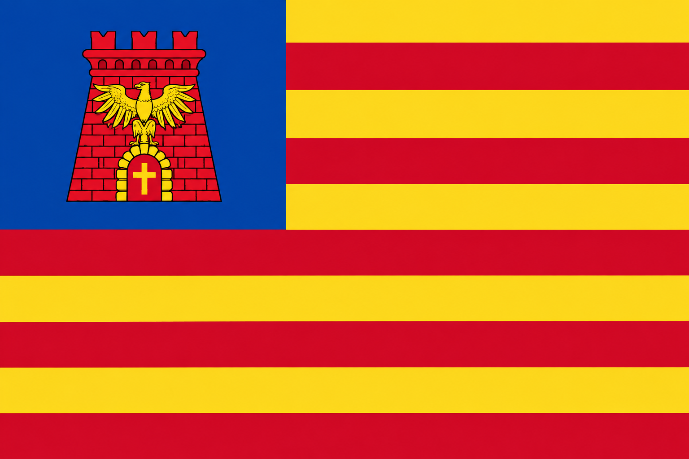

Archimedes’ Spiral
Reason & ingenuity — Sicily’s scientific legacy.
Download SVGCastellammare del Golfo, Sicily’s Catholic heritage, and the American experience in one flag.

Castellammare in the canton. Sicily across nine stripes. America in the form.
At the heart of the blue canton are the red tower and gold eagle of Castellammare del Golfo.
The field carries nine alternating red-and-gold stripes, representing Sicily’s nine historic provinces: Palermo, Messina, Catania, Agrigento, Trapani, Siracusa, Enna, Caltanissetta, and Ragusa. The stripe construction and blue canton retain an immediately American visual grammar while the colors and heraldry point back to Sicily.
A small gold cross in the tower doorway represents Sicily’s Catholic heritage.
Sicily’s Christian history reaches back to the apostolic age. Acts 28:12 records St. Paul stopping at Syracuse for three days on his journey to Rome. That ancient Christian presence became part of the island’s enduring Catholic tradition.
In Castellammare del Golfo, that heritage continues in the long tradition of the parish of Maria SS. del Soccorso, canonically erected in 1526 and commemorated in its 500th anniversary year in 2026.
Historical references: Italian Government heraldic record · Diocese of Trapani · Comune di Castellammare del Golfo
| Element | Meaning |
|---|---|
| Blue canton | The American frame: the American chapter of the Castellammarese and Sicilian-American story. |
| Red tower | Castellammare del Golfo and its historic fortified identity. |
| Gold eagle | The eagle from Castellammare’s civic heraldry, tying the flag directly to the town. |
| Cross in the doorway | A simple reference to Sicily’s Catholic heritage. |
| Nine red-and-gold stripes | Sicily’s nine historic provinces, expressed through an American-style striped field. |
Alongside the flag, these three companion symbols express broader dimensions of Sicilian-American identity and can stand on their own in pins, patches, graphics, apparel, and other applications.
Reason & ingenuity — Sicily’s scientific legacy.
Download SVG
Steadfast faith & directional clarity.
Download SVG
Motion, resilience, and Sicily’s three capes.
Download SVGThe current artwork is provided as a high-resolution PNG.
Download Flag PNG